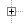
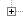

|
| 2,382,361 | 100 % | 4,378 | 100 % |
 | | java.lang.Thread.run() |
| 2,381,625 | 99 % | 3,496 | 80 % |
| | | com.hftparser.readers.ArcaParser.run() |
| 805,507 | 34 % | 867 | 20 % |
| | |  | com.hftparser.readers.ArcaParser.parseDelete(String[]) |
| 345,282 | 14 % | 361 | 8 % |
| | | | com.hftparser.readers.ArcaParser.parseAdd(String[]) |
| 319,014 | 13 % | 339 | 8 % |
| | | | java.lang.String.split(String, int) |
| 117,817 | 5 % | 141 | 3 % |
| | | | com.hftparser.readers.ArcaParser.parseModify(String[]) |
| 5,878 | 0 % | 6 | 0 % |
| | | | java.util.HashMap.get(Object) |
| 1,864 | 0 % | 2 | 0 % |
| | | com.hftparser.readers.GzipReader.run() |
| 789,198 | 33 % | 867 | 20 % |
| | | | com.hftparser.containers.WaitFreeQueue.enq(Object) |
| 586,939 | 25 % | 622 | 14 % |
| | | | java.io.BufferedReader.readLine() |
| 159,815 | 7 % | 200 | 5 % |
| | | com.hftparser.writers.HDF5Writer.run() |
| 786,918 | 33 % | 881 | 20 % |
| | | | com.hftparser.writers.HDF5Writer.writePoint(DataPoint) |
| 783,025 | 33 % | 876 | 20 % |
| | | | | com.hftparser.writers.HDF5CompoundDSBridge.appendElement(Object) |
| 783,025 | 33 % | 876 | 20 % |
| | | | | | ch.systemsx.cisd.hdf5.HDF5CompoundWriter.writeArrayBlockWithOffset(String, HDF5CompoundType, Object[], long) |
| 783,025 | 33 % | 876 | 20 % |
| | | | | | | ch.systemsx.cisd.hdf5.HDF5CompoundWriter.writeArrayBlockWithOffset(String, HDF5CompoundType, Object[], long, IHDF5CompoundInformationRetriever$IByteArrayInspector) |
| 783,025 | 33 % | 876 | 20 % |
| | | | | | | | ch.systemsx.cisd.hdf5.cleanup.CleanUpCallable.call(ICallableWithCleanUp) |
| 783,025 | 33 % | 876 | 20 % |
| | | | | | | | | ch.systemsx.cisd.hdf5.HDF5CompoundWriter$4.call(ICleanUpRegistry) |
| 628,858 | 26 % | 705 | 16 % |
| | | | | | | |  | ch.systemsx.cisd.hdf5.cleanup.CleanUpRegistry.cleanUp(boolean) |
| 154,166 | 6 % | 171 | 4 % |
| | | | ch.systemsx.cisd.hdf5.HDF5Reader.close() |
| 571 | 0 % | 1 | 0 % |
| | | ch.systemsx.cisd.hdf5.HDF5BaseWriter$2.run() |
| 0 | 0 % | 881 | 20 % |
| | com.hftparser.main.ParseRun.main(String[]) |
| 736 | 0 % | 882 | 20 % |